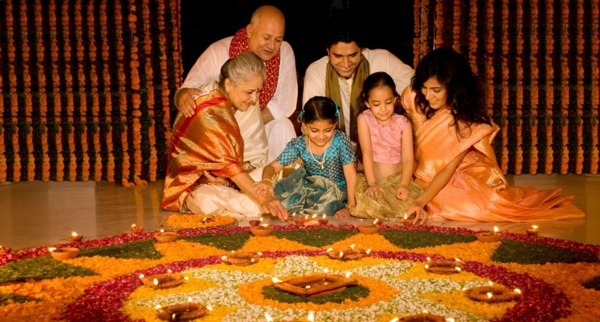
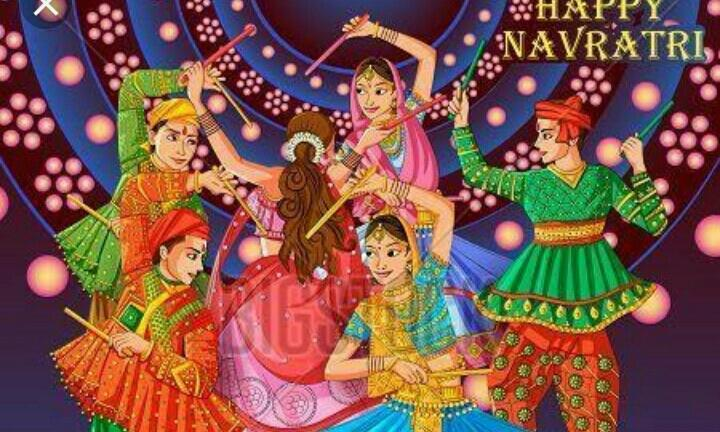
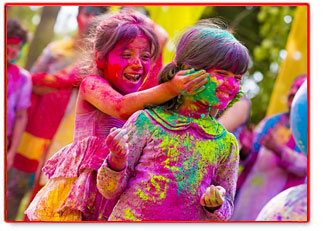
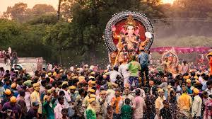

|
The festival of lights. It is known as Diwali or Deepali.
It typically lasts 5 days. Diwali symbolizes "victory of light over darkness, good over evil, and knowledge over ignorance. Before Diwali starts, people start cleaning their houses, decorating it. They do many pujas, and always have the house lit. People thinks this will allow the Gods to come into their house. Everyone dresses in the finest clothes, and eat the best foods at this time. 
|
Navratri is celebrated for nine nights. Nav=nine and rat=night. It is celebrated every autumn. It is where the Goddess Durga battles a demon in order to restore dharma. During Navratri, we celebrate all the Goddess, they are put in the center and everyone dances around them. There is a special dance that everyone does, and its in a circle around the pictures of the Goddess. Everyone dresses in navratri outfits, and everyone is awake till late, just dancing. |
| Holi is the festival of colors. Holi signifies spring. It is marked by the burning of the demon holika which signifies the win of good over evil. There is a huge bonfire type puja and then the next mornign its the colorful time. People usually celebrate at temples or get together somewhere. Most of the times people wear white and at the end of the day they are all colorful. Some people only use the powdered color, and others use color water and spray. It's a very fun time with friends and family and the Indian community.  |
This is devoted to the Lord Ganesh (son of Lord Shiva, destroyer). The festival is for the birth of Ganesh. There is offerings and puja to a murti (clay ideal), which is then put into the water. There is music and festivties while they are getting ready to immerse the murti in water.  |